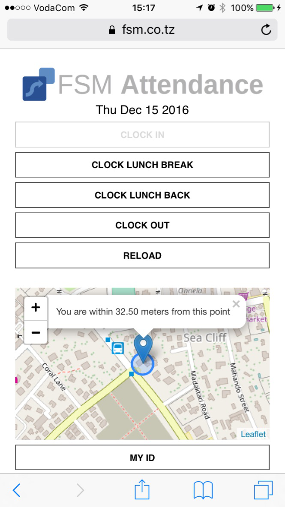
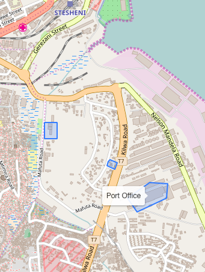
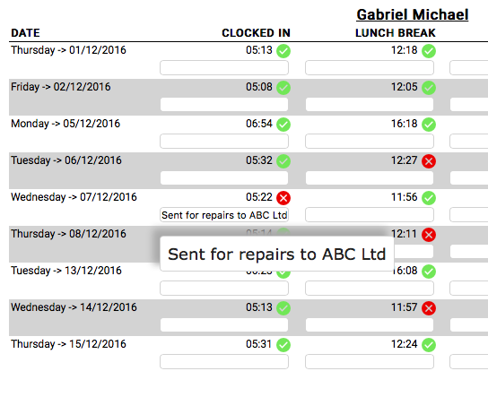
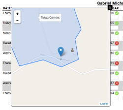
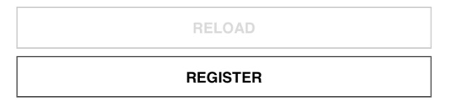
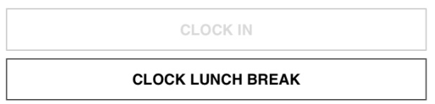
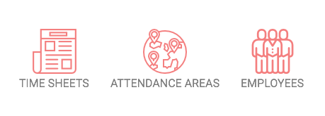

Your employee will use his mobile phone browser to clock in at his assigned area. No username or passwords required as every phone has its unique "finger print". This will ensure no forgery is done with passwords. Get your employee to use his own phone so he will not share it with other co-workers!
Create your own areas on maps where your employees can clock in. Predefine them very precisely in a visual way. You can then bind each area to a specific employee so he is authorised only to clock in specific geographical areas.
Check the reports daily to see if the employee has clocked in into the correct area. Add notes to a specific clock date. If not in the area you can easily pinpoint where the employee has clocked in and take disciplinary action.
Click on the date detail to pinpoint the exact locaton where the timing in was done.
Open the FSM Attendance Mobile Clocking on your mobile phone browser and click on "REGISTER" to bind your smartphone to the system. Allow the system to access your location.
Clock in/out to save data in the system for analysis. Remember that all the actions can be done ONCE a day for security reasons!
Open the FSM Attendance Control Panel on your browser and start analysing your data!
A user will be able to register one browser. A secret key will be stored on the smartphone which will be impossible to be changed. The user will have to ALWAYS use the same browser and phone to register his actions in the system. If he uses another phone he will have to go through the whole process of registering and the double entries will appear. He will be able to clock attendance actions only ONE TIME a day. All clocking actions have to be completed sequentially.
Attendance areas are the physical locations where the user will be able to clock in. These can be simple drawn and named on the map in the Control Panel Area. From the Employees section a user can be bound to specific areas. Clocking in an area will generate a green icon whereas clocking out of an assigned area will create a red icon for easy identification of employees breaching the rules.
Includes subdomain https://your_comany.fsm.co.tz for easy access